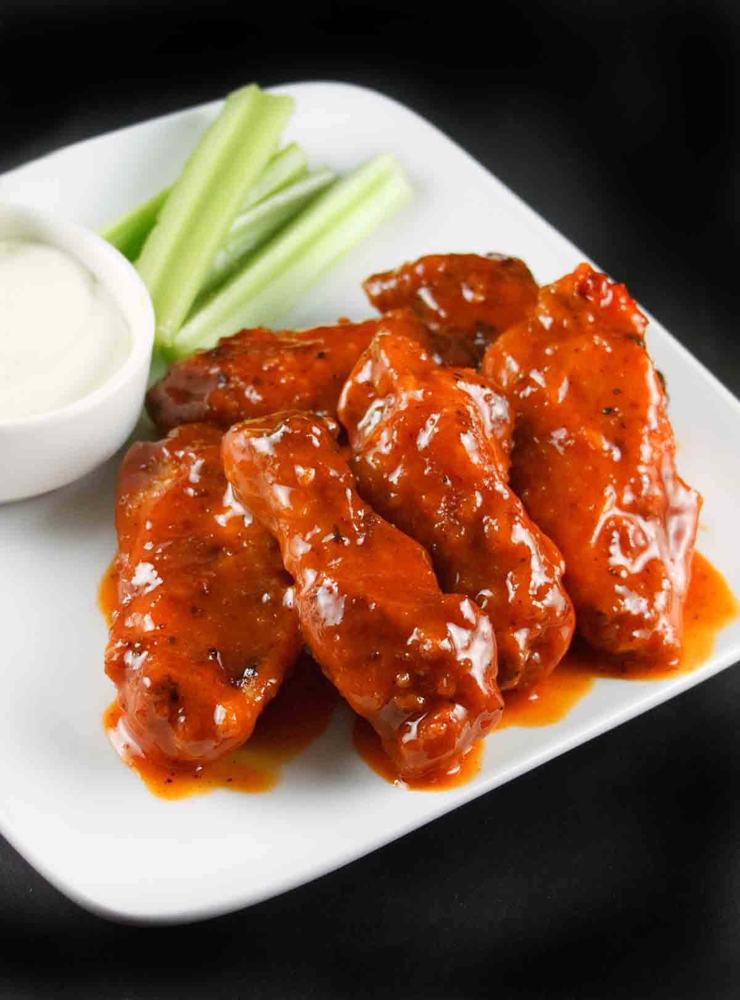

Buffalo Wings

Description
Enjoy spicy buffalo wings coated in a rich blend of melted butter, red pepper sauce, tomato sauce, chili powder, and cayenne pepper. These wings offer the perfect balance of heat and flavor, making them an irresistible snack or appetizer for any occasion.
Ingredients
- 20 chicken wings, split and tips discarded
- 1/4 Cup butter, melted
- 1/4 Cup red pepper sauce
- 3/4 Cup tomato sauce
- 1 1/2 Tablespoon chilli powder
- 1 Teaspoon cayenne pepper
Steps
- Preheat the oven to 375 degrees F (190 degrees C).
- Bake wings in the preheated oven for 30 minutes or until cooked through and crispy.
- Meanwhile, in a small bowl combine melted butter, red pepper sauce, tomato sauce, chili powder, and cayenne pepper. Mix together.
- When wings are baked, dip in sauce to coat well, then shake off excess and return coated wings to baking sheet. Reduce the oven temperature to 250 degrees F (120 degrees C) and bake for another 15 minutes to set sauce.